About
Contribute
Trenta OS
Clean. Beautiful. Free.
Install
ver. Sunrise Alpha 3 - 64bit
A better experience
on the computer you already own.
Trenta OS is a free & open operating system that aims to stand in the place of Mac OS X and Windows